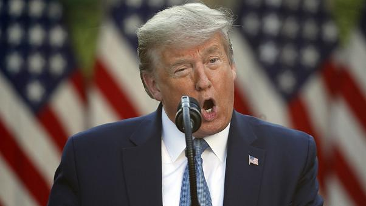

Internacional
Trump enarbola la bandera de la ley y el orden ante la ola de violencia
El presidente busca activar su base electoral con una retórica de mano dura ante la escalada de las protestas por la brutalidad policial contra los afroamericanos
El presidente de Estados Unidos, Donald Trump.
Donald Trump se ha topado con un estallido social a cinco meses de las elecciones presidenciales y ha decidido jugar la baza de la mano dura, enarbolar la bandera de la ley y el orden, ante la escalada violenta de las protestas por la brutalidad policial contra los afroamericanos. Más allá de condenar los saqueos y los ataques a los bienes, algo que han compartido todos los líderes políticos, el presidente ha decidido ir más allá al calificar los hechos de “terrorismo nacional”, lo que le sitúa ante un relato muy distinto del de la ira contra el racismo. El lunes planteó que recurriría al Ejército si la espiral seguía.
En paralelo a las protestas pacíficas de miles de estadounidenses, una ola de vandalismo ha provocado grandes destrozos en todo el país, saqueando establecimientos, prendiendo fuego edificios en las grandes ciudades y sembrando el pánico en un sector comercial que precisamente acaba de pasar un cierre de dos meses a raíz de la pandemia. Donald Trump se dirigió el lunes a la nación desde los jardines de la Casa Blanca, tras una semana de terremoto social, pero lo hizo sobre todo hacia el enfado de los ciudadanos ante semejantes imágenes de violencia.